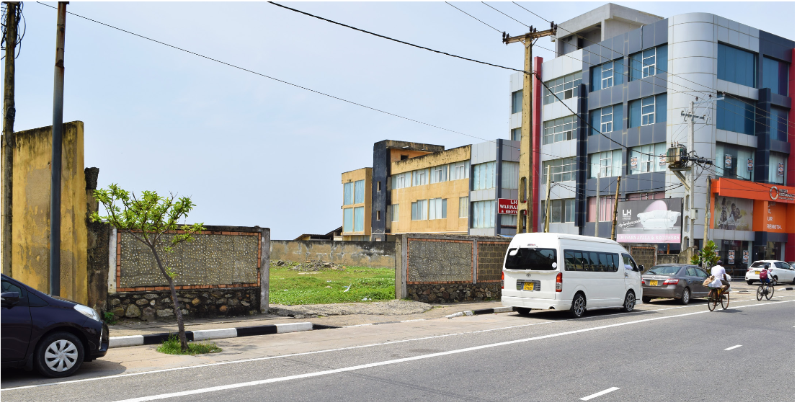
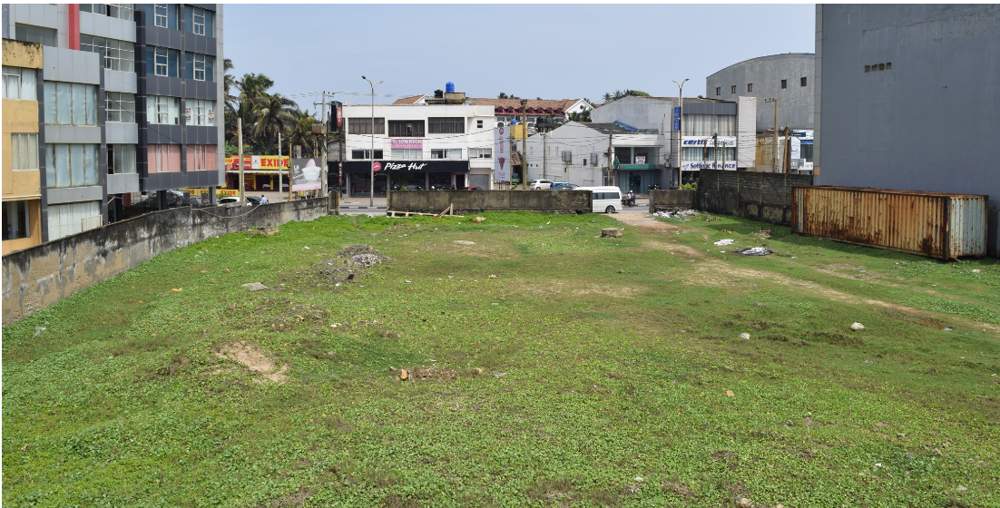
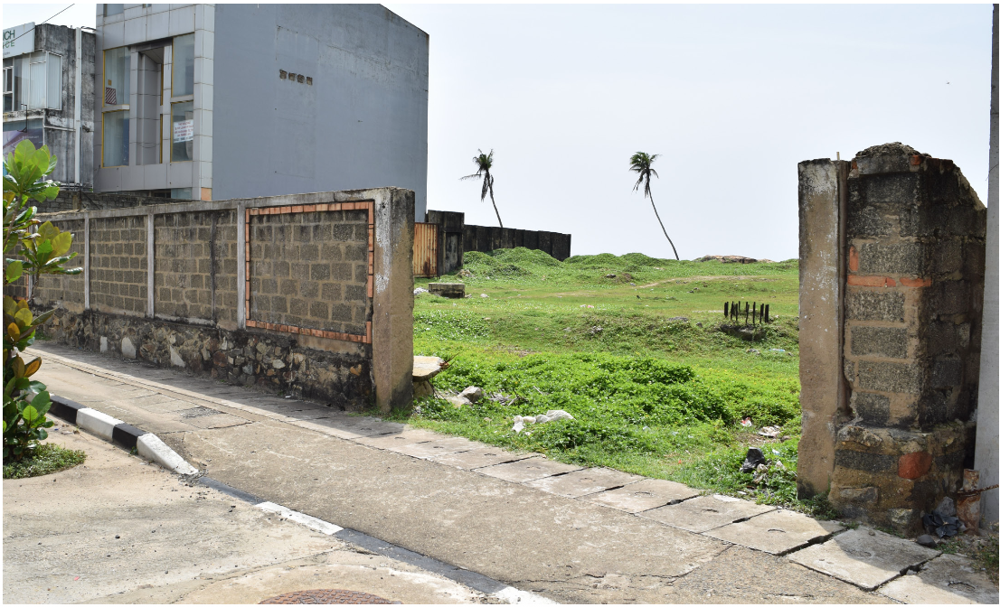
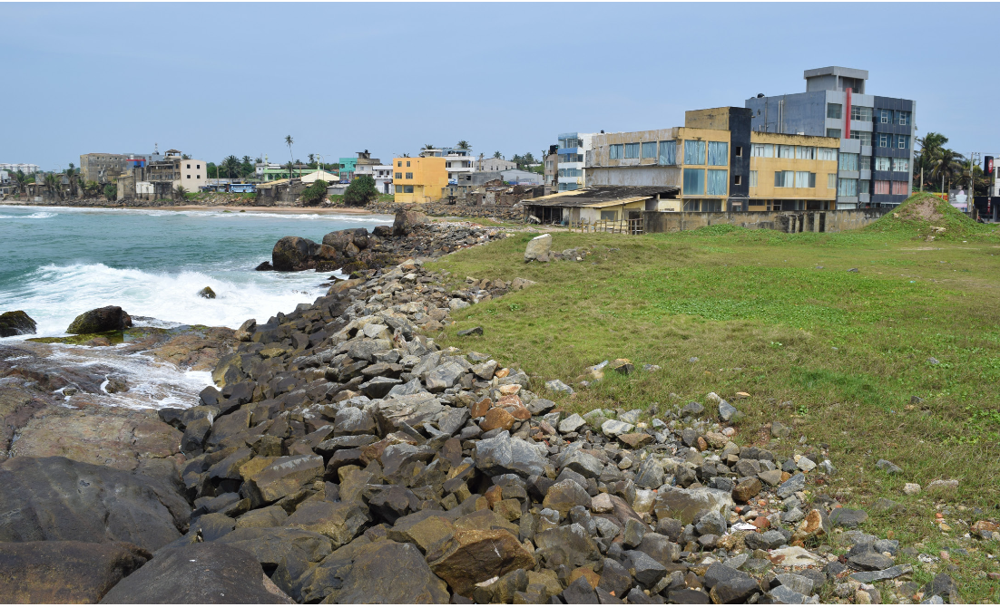
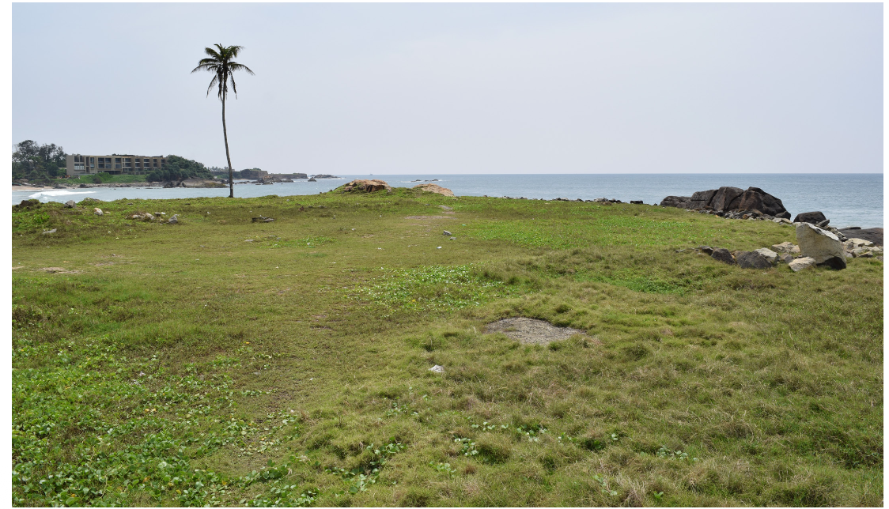

This document explores the investment potential of the Aqua Vista land in Galle, Sri Lanka — a 203 perch bare land uniquely placed to access the touristic Galle Fort. The Galle Fort is a primary tourist destination in Sri Lanka, perhaps second only to the capital city.
The Fort enjoys steady flows of local and foreign tourists year round, making a tourist-focused development in this area highly feasible. This document explores the suitability of the location, its developmental possibilities, the area's current market, and long term potential.
The land is within a 5-minute drive from the Fort, and less than a kilometer as the crow flies. Directly on the Galle main road, all tourists arriving from Colombo or any major airport must pass this land to reach the Fort.
The Fort itself is an extremely constrained area with only very small boutique hotels within, forcing larger developments to look for land nearby. No blocks of this size are easily accessible in the vicinity.
Wide, direct road frontage with high visibility to all passing traffic
Less than 1km from the UNESCO World Heritage Galle Fort
On the route from all major international airports in the country
Rare large-format plot — no comparable blocks available in the area
The uniqueness of the land becomes clear upon examining its coast. The town area surrounding the Fort is otherwise congested and not very scenic, but as the land is a natural promontory it presents three grand sea views.
It is also worth noting that while Galle in general is vulnerable to tsunamis, this land is unlikely to be badly affected as it is significantly higher than the surrounding terrain — a notable safety advantage for any development.
"No blocks of this size are easily accessible within the vicinity of the Fort — a truly rare opportunity in one of Sri Lanka's most sought-after locations."





The Sri Lankan tourism industry grew aggressively over the last decade. After declining in 2019 (terrorist attack) and sharply during the pandemic, the SLTDA forecasts full recovery within 3 years with a return to year-on-year growth trend. Approximately 600,000 tourists visited in 2022, on track with projections despite the political crisis.
The Fort sees steady flows of Chinese, Indian, and European tourists year round, especially busy in the European winter. Galle is far outperforming any other location in Sri Lanka. Despite having several five-star hotels, demand in 2018 exceeded supply — creating significant premium rates even for small rooms and hostels during peak season.
A growing international apartment market has emerged in Galle. The Fairway Galle Apartments (250 units) continue to see interest from both local and foreign buyers. Recent removal of restrictions on foreign apartment ownership in Sri Lanka unlocks significant new demand. A sizeable expat retirement community has already established itself in Galle, attracted by the tropical climate and cost of living.
A project was previously planned for this land — a mixed hotel and apartment development — with all approvals obtained and piling work completed. A new developer may use the existing approvals and piling directly, or amend them for alternative developments.
While Sri Lanka maintains restrictions on foreign freehold land ownership, foreigners are free to purchase a long lease. This land is available on a 99-year lease, granting the purchaser full rights to use and develop the land as they see fit for the entire term.
Restrictions on foreign apartment ownership have been recently removed — opening significant new investment and sales channels for any mixed-use development on this site.
Full development rights for the complete lease period. Foreign buyers may own apartments within any development outright under recently relaxed ownership laws.
Existing government approvals and completed piling work can be utilised or amended, significantly reducing time to development commencement.